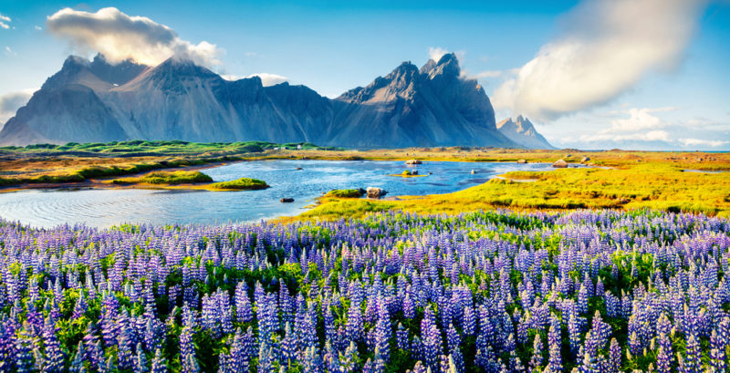
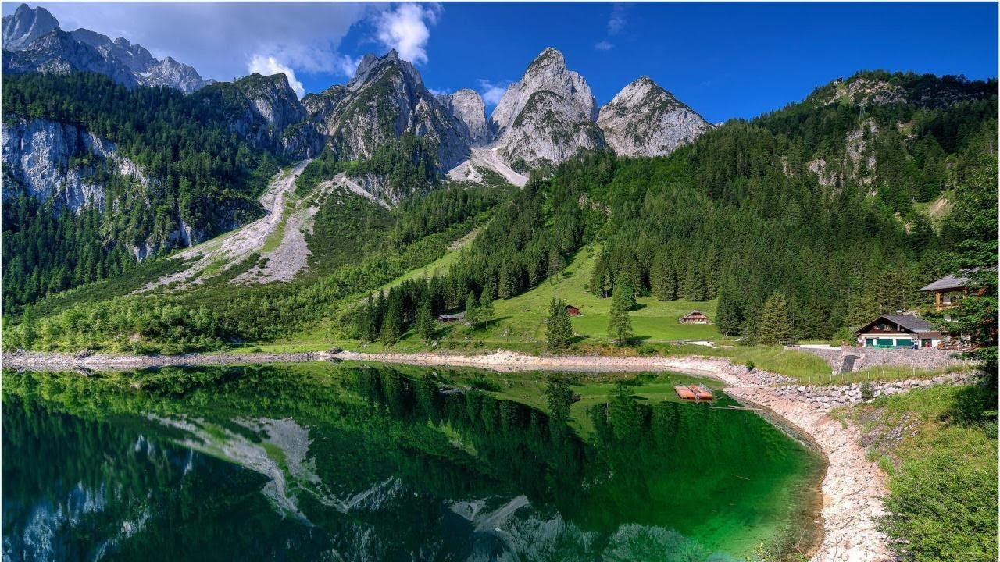
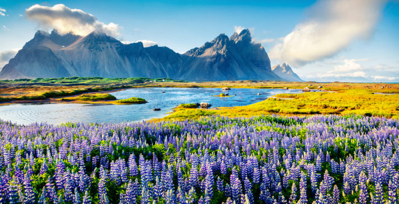
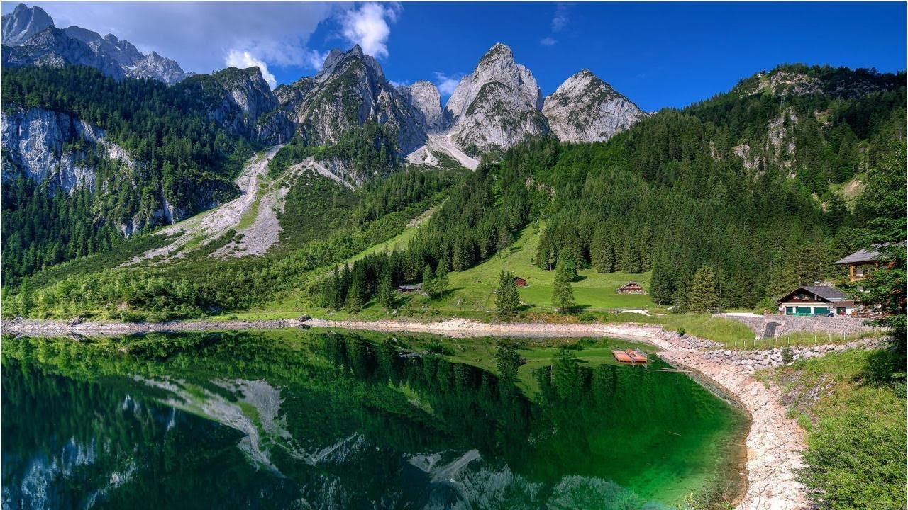
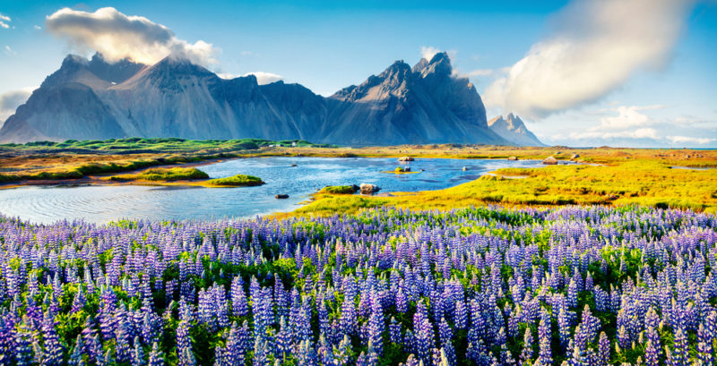
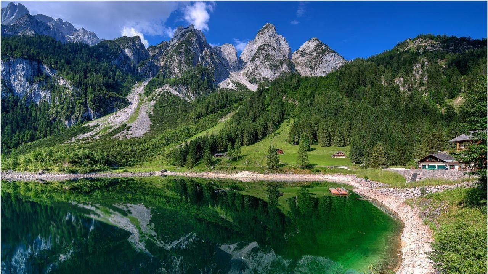
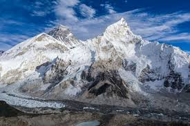
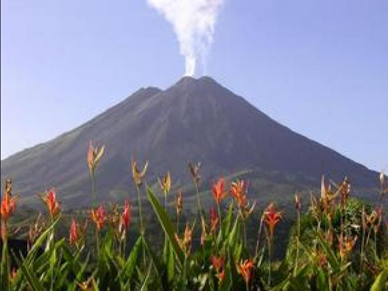
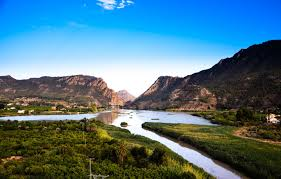

|


|

NevadosLos nevados se producen cuando una montaña alcanza la suficiente altura para que su temperatura sea menor a 0 y comience a nevar. Ver mas |

VolcanesLos volcanes son un tipo de montaña, la cual en su punta existe un crater que contiene magma, el cual se mantiene inactivo hasta que es estimulaso por sucesos como terremotos. Ver mas |

VallesLos valles se caracterizan por tener una sona mas baja entre 2 montañas por la cual generalmente pasa un rio. Ver mas |